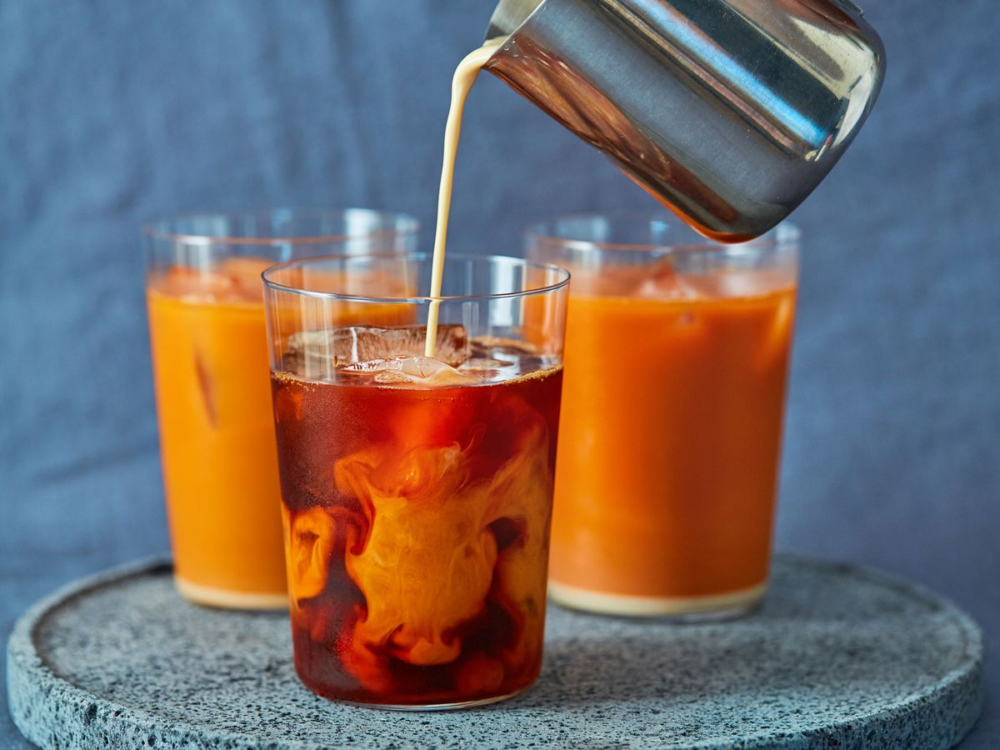

Thai iced tea is a combination of strong black tea, condensed or evaporated milk, sugar, and spices that is served over crushed ice. Traditionally, the drink is made with loose-leaf black tea such as Assam, Ceylon, or Keemun tea varieties, while the additions usually include crushed tamarind, anise, or cardamom.
Meal prep time : 6 minutes
Servings : 1